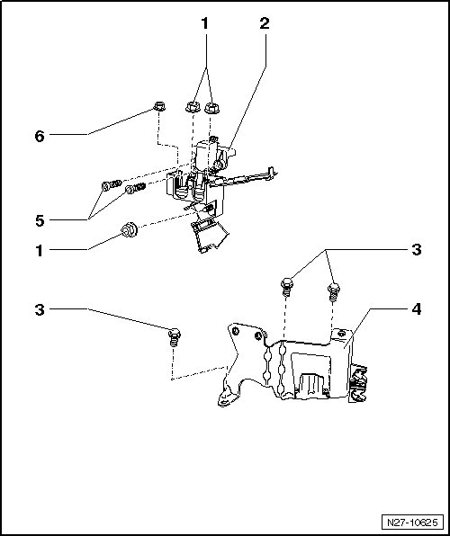

Jump Start Point Assembly Overview, through 04.05
Jump Start Point Assembly Overview, through 04.05
• The external starting point is in the left of the engine compartment near the left bulkhead.
• External starting point, vehicles from 05/05 --> [ Jump Start Point Assembly Overview, from 05.05 ] .

1 - Collar nut
• M8
• 20 Nm
2 - External starting point housing
3 - Collar bolt
• M6
• 8 Nm
4 - Hydraulic oil reservoir and external starting point bracket
5 - Socket head bolt
• M6 x 15
• 8 Nm
6 - Collar nut
• M6
• 10 Nm